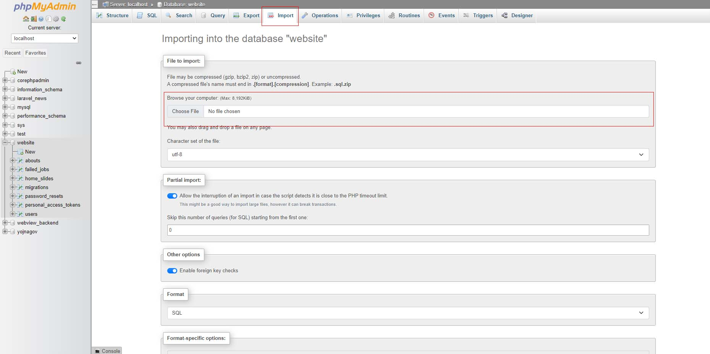
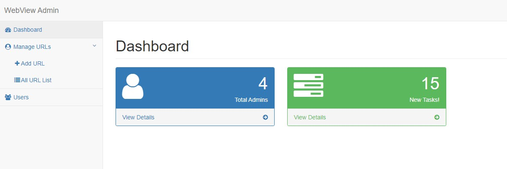

Welcome to Categorized WebView
Categorised WebView - Web to Android app has ability to convert a website into an Advanced Android app in just a few minutes by adding URL into Backend and then it will be live. This WebView android app can be managed by a powerful PHP Admin Panel where you can put multiple URLs in a Single app and also you can categorised URL by there usage. Categories WebView - Web to Android app has many features like live geolocation, Downloading and uploading files, JavaScript enabled, Dedicated Desktop mode to see full size website in your Android devices a list of features are available below...
Features of Categorised WebView App
- Easy to reskin with step by step documentation available with this code
- No coding or programming knowledge required
- Easy to Change colors
- Support Multiple URLs Adding features
- Admin Can add or Change URLs remotely without updating app source code
- Notification feature to get updated users
- Facebook Audience Network and Admob Ads
- Downloading and uploading file feature available
- Geo Location feature available
- Easy to setup Admin Panel in any type of hosting
- Music and Video file playing feature available
- Dark and light mode available
- Calling feature available if website have any mobile number
- Swipe to reload feature available
- Admin can add website with featured option or without featured option
- SMS, Email, Dialer, Facebook Messenger Feature available
How to use Categorised WebView App
Using Categorised WebVeiw app - Web to Android app is very easy and simple just install Admin panel in any type of web hosting and then add API URL into app source code and then you are ready to go, after building r generating app bundle or APK you can able to add website URLs into Admin panel. All the URLs will be store in the Admin panel where admin can change or update URLs remotely without changing app source code. Admin can also add own ads in this app.
Uploading Zip File into Web Hosting
Before doing anything you need to upload webview_admin.zip file into your hosting server. You can upload this file into your hosting server by using any FTP client like FileZilla or any other FTP client. After uploading this file you need to extract this file into your hosting server.
Creating and Configuring Database
After extracting webview_admin.zip file you need to create a database and configure database in the Admin panel. You can create a database by using any database management tool like phpMyAdmin or any other database management tool. After creating database you need to configure database in the Admin panel. You can configure database in the Admin panel by opening config.php and init.php file given in the config folder. You need to change database name, database username and database password in the config.php and init.php file.
config>config.php and init.php
config.php
init.php
Importing Database
Now you need to import data table which is given the directory with the name of webview_backend.sql available with the backend directory. You can import this file by using any database management tool like phpMyAdmin or any other database management tool.

Adding Web URL into Admin Panel
After setting up Admin panel you need to add web URL into Admin panel. You can add web URL into Admin panel by opening admin panel in your browser. You can open admin panel by using this URL http://yourdomain.com/webview_admin and then you need to login into Admin panel by using this username and password admin and admin. After login you need to click on the Manage URLs where you will get Add URL and All URL List option. You need to click on Add URL option to add new URL you can add multiple links and the app will be convert into a buetiful icon.
